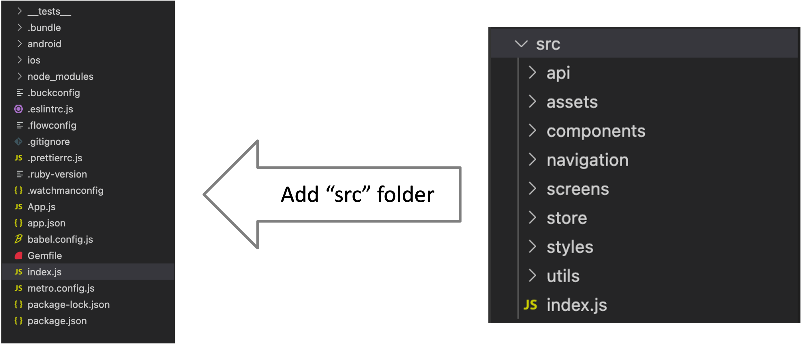

Creating a new application
To create a new project just run:
npx react-native init yourProject
[Optional]
Using a specific version:
npx react-native init yourProject --version X.XX.X
Using a specific template:
npx react-native init yourTSProject --template react-native-template-typescript
Scripts
Runs your android app:
"android": "react-native run-android”
Runs your ios app:
"ios": "react-native run-ios”
Starts Metro Bundler:
"start": "react-native start”
Example:
"install:full": "rm -rf node_modules && npm install && rm -rf /tmp/metro-bundler-cache-* && cd ./ios && pod install"
Project structure recommendations

Core Components
| REACT NATIVE UI COMPONENT |
WEB ANALOG |
DESCRIPTION |
| <View> |
A non-scrolling <div> |
Container |
| <Text> |
<p> |
Displays, styles, and nests strings of text |
| <Image> |
<img> |
Displays different types of images |
| <TextInput> |
<input type="text"> |
Allows the user to enter text |
| <ScrollView> |
<div> |
A generic scrolling container |
Flatlist vs map
- long lists of data
- renders items lazily

- small number of things of a limited size
- renders all its child components at once
Touchables

TouchableOpacity

TouchableHighlight

TouchableWithoutFeedback

TouchableNativeFeedback
Styles
Constant
const styles = { fontSize: 30, fontWeight: '600' };
JavaScript expression inside curly brackets
style={{ backgroundColor: isUpdated ? 'blue' : 'grey' }}
StyleSheet
StyleSheet.create
const styles = StyleSheet.create({
title: { fontSize: 30 },
});
StyleSheet.compose
const styles = StyleSheet.compose(style1.text, style2.bigText);
StyleSheet.flatten
const styles = StyleSheet.flatten([style1.text, style2.bigText])
Flex

FlexGrow, FlexBasis and FlexShrink

flexGrow

flexBasis

flexShrink
Flex Direction

row-reverse
Justify Content

flex-start

flex-end
Justify Content

space-evenly
Align Items

stretch,
flex-start,
baseline

flex-end
Align Content

flex-start

flex-end
Align Content

space-between
Align Self

flex-start, baseline
Flex Wrap

wrap
Platform Specific Code
Platform.OS
if(Platform.OS === 'ios') {}
Platform.Version
if(Platform.Version === 25) {}
Platform.select
const Component = Platform.select({
ios: () => require('ComponentIOS'),
android: () => require('ComponentAndroid'),
});
Platform Specific extensions
Old architecture
Old architecture
New architecture

ESLint & Prettier

For catching errors
Husky

Setup:
npm install husky --save-dev
In your package.json file:
"scripts" {
"test": "karma start",
"lint": "npm run tslint \"Client/**/*.ts\"",
"precommit": "npm run lint && npm test",
"prepush": "npm run lint"
}